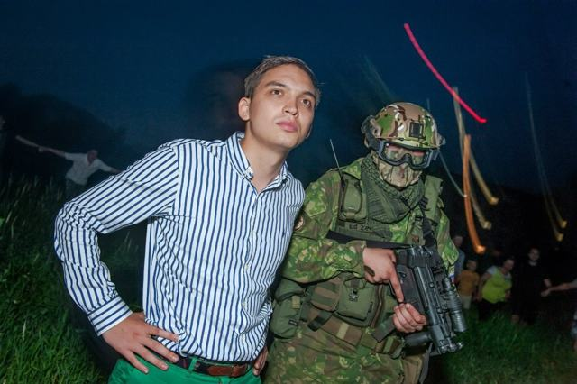
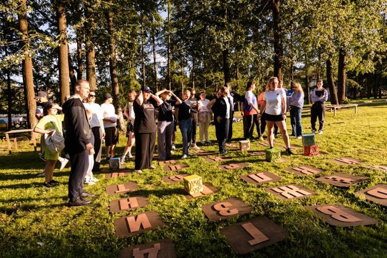
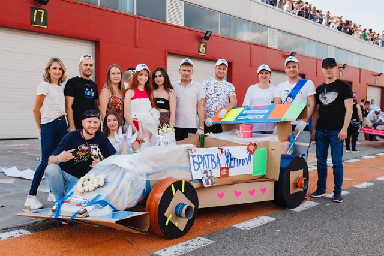
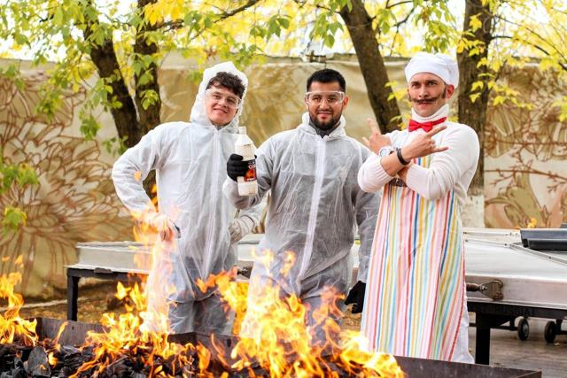
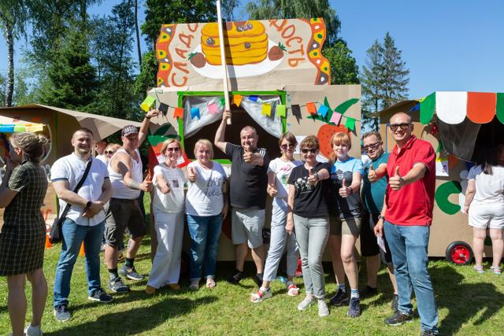
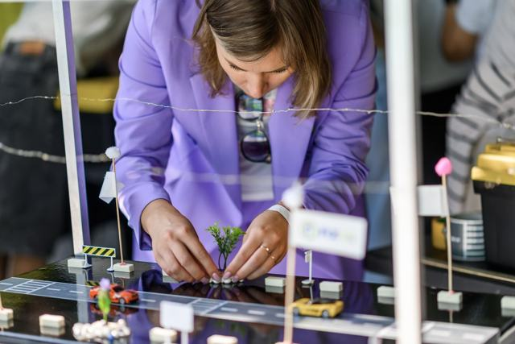
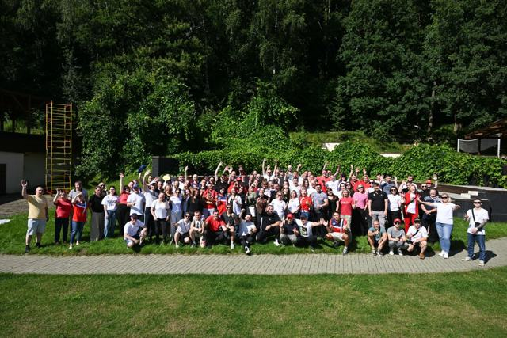

Katalist team building portfolio, week 47
Черновик · выходит: в понедельник недели, ссылки в журнале пока нетПоправить: напиши боту «правка W47 500px 01: что поменять» и приложи фото. Без правок выйдет как есть.
Описание = текст из колонки «описание» + ссылка в конце (кликабельной ссылки у 500px нет, адрес остаётся текстом). Категория из колонки «категория». Место съёмки не заполнять (паспорт: у кадров нет подтверждённого места). Лимит Free 7 загрузок в неделю: все 7 можно сегодня.
№ · файл · заголовок · описание · alt · ссылка с utm · альбом/категория
1 · katalist-timbilding-zombi-kvest-005.jpg · Night quest: a guest and a soldier under light trails · A guest in a striped shirt stands shoulder to shoulder with an actor in camouflage, helmet and goggles, light trails cut through the dark behind them. Shot at the Katalist zombie quest, a night game with actors as soldiers and zombies. Program page: https://catalystrussia.ru/teambuilding/vse-programmy/zoombie-kvest/?utm_source=500px&utm_medium=photo&utm_campaign=zavod-w47 · Zombie quest team building: guest in a striped shirt next to a soldier actor at night · https://catalystrussia.ru/teambuilding/vse-programmy/zoombie-kvest/?utm_source=500px&utm_medium=photo&utm_campaign=zavod-w47 · People · дубль, уже на аккаунте: https://500px.com/photo/gqZje7kOtaj
2 · katalist-timbilding-kvest-008.jpg · Letters and cubes in a pine glade · Late sun falls through the pines onto wooden letters and painted cubes spread over the grass, players split into groups and look for the right order. Katalist quests run 1.5 to 3 hours. Program page: https://catalystrussia.ru/programmy/kvest-dlya-komandy/?utm_source=500px&utm_medium=photo&utm_campaign=zavod-w47 · Quest team building: players among wooden letters and cubes in a sunlit pine glade · https://catalystrussia.ru/programmy/kvest-dlya-komandy/?utm_source=500px&utm_medium=photo&utm_campaign=zavod-w47 · Sport · https://500px.com/photo/R6dN3fVLRGm
3 · katalist-timbilding-gonki-formula-1-025.jpg · Wedding themed cardboard race car and its crew in the pit lane · A team of fifteen stands at the red pit garages around a car decorated with white flowers, hearts and a veil. The jury scores design before the race, so teams also dress the driver and the support group. Program page: https://catalystrussia.ru/teambuilding/vse-programmy/formula-1/?utm_source=500px&utm_medium=photo&utm_campaign=zavod-w47 · Formula 1 team building: team poses with a flower-decorated cardboard car at the pits · https://catalystrussia.ru/teambuilding/vse-programmy/formula-1/?utm_source=500px&utm_medium=photo&utm_campaign=zavod-w47 · People · https://500px.com/photo/ohKBZ27DIKd
4 · katalist-timbilding-wow-picca-021.jpg · Fire and a moustache: the WOW Pizza kitchen crew · A cook with a curled moustache and striped apron stands with two helpers in white coveralls and goggles behind high flames. WOW Pizza bakes on fireclay stones brought from Italy. Program page: https://catalystrussia.ru/teambuilding/vse-programmy/wow-pizza/?utm_source=500px&utm_medium=photo&utm_campaign=zavod-w47 · WOW Pizza team building: chef in a striped apron and helpers behind open flames · https://catalystrussia.ru/teambuilding/vse-programmy/wow-pizza/?utm_source=500px&utm_medium=photo&utm_campaign=zavod-w47 · Food · https://500px.com/photo/8KR3MbKeJ1j
5 · katalist-timbilding-festival-fudtrakov-004.jpg · Thumbs up at the pancake truck · A team gives a thumbs up in front of its cardboard food truck painted with a stack of pancakes and strawberries. Each truck has its own brand and menu and trades for play money. Program page: https://catalystrussia.ru/teambuilding/vse-programmy/festival-fudtrakov/?utm_source=500px&utm_medium=photo&utm_campaign=zavod-w47 · Food truck festival team building: team gives thumbs up at their pancake food truck · https://catalystrussia.ru/teambuilding/vse-programmy/festival-fudtrakov/?utm_source=500px&utm_medium=photo&utm_campaign=zavod-w47 · Food · https://500px.com/photo/ohKBZ27DQKd
6 · katalist-timbilding-megapolis-007.jpg · Planting a tree in a model city · A participant in a lilac jacket sets a tiny tree among toy cars, road signs and street lamps. Teams in Megapolis plan their district so it connects with the neighbours. Program page: https://catalystrussia.ru/teambuilding/vse-programmy/gorodskaya-strojka/?utm_source=500px&utm_medium=photo&utm_campaign=zavod-w47 · Megapolis team building: woman places a tiny tree on a model city street · https://catalystrussia.ru/teambuilding/vse-programmy/gorodskaya-strojka/?utm_source=500px&utm_medium=photo&utm_campaign=zavod-w47 · City & Architecture · https://500px.com/photo/6e4Qvcn7mO8
7 · katalist-timbilding-korporativ-049.jpg · A hundred hands up: company photo on the lawn · About a hundred colleagues wave at the camera on a lawn by an open-air amphitheatre at the end of the day. Katalist has run 4 800 projects since 2010. Corporate events: https://catalystrussia.ru/korporativ/?utm_source=500px&utm_medium=photo&utm_campaign=zavod-w47 · Corporate team building: around a hundred colleagues wave on a lawn by an amphitheatre · https://catalystrussia.ru/korporativ/?utm_source=500px&utm_medium=photo&utm_campaign=zavod-w47 · People · https://500px.com/photo/Zivp6qnDkF5






